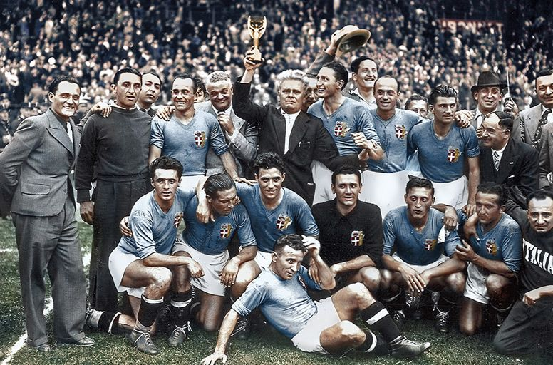
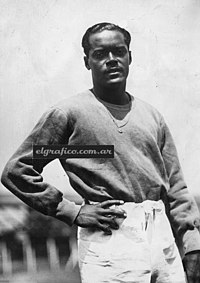

A Copa de 1938, disputada na França, foi jogada em meio a um continente tenso, que estava prestes a explodir
em uma guerra que levaria milhões de vidas e arruinaria economias. Ainda assim, a França se esforçou para
organizar um grande Mundial, que culminou em uma grande campanha brasileira e no segundo título mundial da
Itália.
Assim como a Copa anterior, em 1934, o Mundial da França teve a participação de 14 seleções e teve, pela
primeira vez na história, representantes da América Central (Cuba) e da Ásia (Índias Orientais Holandesas,
território que atualmente é da Indonésia).
O formato eliminatório de 1934 foi mantido. Se uma partida permanecer empatada depois dos 90 minutos, mais
30 minutos de prorrogação seriam jogados. Se o placar permanecesse igual, um jogo desempate era realizado.
Foi a última Copa do Mundo a ter este formato eliminatório.
A grande favorita para o título era a Seleção Italiana, então campeã mundial, campeã olímpica e mantinha a
base que conquistara o título em 1934. A outra favorita era Alemanha, que havia anexado a Áustria e tinha
passado a contar com boa parte dos talentosos jogadores do Wunderteam (com notória exceção do craque
austríaco Matthias Sindelar, que não aceitou fazer parte da Seleção Nazista de Adolf Hitler), além da base
que conquistara o terceiro lugar em 1934. Sindelar foi encontrado morto em sua casa um ano depois,
segundo o laudo oficial (nazista), asfixiado por monóxido de carbono.
Alemanha, França, Itália, Tchecoslováquia, Hungria, Cuba e Brasil foram sorteadas como cabeças-de-chave em
Paris, em 5 de março. Cinco das sete partidas da primeira rodada tiveram prorrogação; duas ainda foram
para o jogo desempate. Em um jogo desempate, Cuba avançou para a fase seguinte à custas da Romênia. No outro
jogo desempate, a Alemanha (que usava sua camisa com uma suástica no peito) liderava o placar por 1x0 no
primeiro jogo quando a Suíça empatou, e no segundo jogo, a seleção germânica liderava por 2x0 (a comissão
técnica chegara a mandar telegrama a Adolf Hitler contando sobre a vitória) quando sofreu a virada para 2x4.
Esta derrota, que se deu em frente a uma torcida hostil que arremessava garrafas em Paris, foi colocada na
conta do treinador alemão Sepp Herberger em uma atitude derrotista dos cinco jogadores austríacos que ele
foi forçado a convocar; um jornalista alemão comentou mais tarde que "alemães e austríacos preferiam jogar
um contra o outro até mesmo estando no mesmo time". A eliminação alemã foi uma grande surpresa, pois esta
era considerada favorita para a conquista do título, ao lado da Itália. Esta foi a primeira vez em uma
Copa do Mundo que a Alemanha não passou da primeira fase, uma vez que a seleção não participou das Copas de
1930 e 1950 - tal fato voltaria a acontecer só oitenta anos depois, na Copa do Mundo da Rússia em 2018. A
então campeã Itália bateu a Noruega por 2 a 1, na prorrogação. O Brasil venceu a Polônia na prorrogação por
6 a 5, em um dos melhores jogos da história das copas. No primeiro tempo, prevaleceu a classe e o futebol
refinado dos brasileiros e, ao final dos 45 minutos, o Brasil vencia por 3 a 1. Mas, no intervalo do jogo
desabou um fortíssimo temporal que enlameou o gramado, dificultando o toque de bola dos brasileiros. Os
poloneses se aproveitaram e o jogo terminou empatado em 4 a 4. Na prorrogação,o Brasil fez mais dois
gols,vencendo a partida por 6 a 5. O craque brasileiro Leônidas da Silva fez 3 gols e o polonês Ernest
Willimowski marcou 4 gols. Um dos gols de Leônidas foi marcado com o atacante descalço. Leônidas se
preparava para trocar de chuteiras perto da área polonesa quando recebeu um presente do goleiro polonês, que
escorregara ao tentar cobrar um tiro de meta. O atacante brasileiro completou para o gol de primeira, ainda
com a chuteira na mão. A Tchecoslováquia venceu a Holanda na prorrogação por 3 a 0, e a Hungria goleou
por 6 a 0 as Índias Orientais Holandesas (atual Indonésia).
brasil no jogo acirrado contra polonia em que venceu por 6X5
Se por um lado as Índias acabaram eliminadas na primeira fase (oitavas de final) com goleada para a forte
Hungria de Karoly Dietz, Cuba conseguiu o feito de avançar para as quartas de final. Após empate em 3 a 3
com a Romênia na estreia, os cubanos venceram o duelo de desempate por 2 a 1 para avançarem. Nas quartas,
porém, levaram de 8 a 0 para a Suécia na maior goleada daquela Copa.Os romenos, por sua vez, ainda tinham o
rei Carol II no trono e participavam da terceira Copa seguida.
Depois da queda do monarca, porém, o país ficou décadas sem disputar uma Copa, só voltando no México em 1970
(clique aqui e saiba mais sobre a influência de Carol II nas participações romenas em Copas).
As ausências e as curiosidades
A Copa de 1938 sentiu a ausência de quatro grandes seleções da época: a Áustria, que tinha conseguido a
classificação, mas fora anexada pela Alemanha e deixara de existir como nação; a Espanha, que estava em
guerra civil na época; e Argentina e Uruguai, que protestaram pela Fifa ter mantido o Mundial na Europa.
Pela anexação do território austríaco por parte da Alemanha, os jogadores da seleção da Áustria,
semifinalista quatro anos antes, poderiam fazer parte da seleção alemã. Mas muitos se recusaram, como um dos
grandes nomes daquele time, Matthias Sindelar, o "Mozart do futebol".
Chamou atenção também o fato de aquela Copa ter sido a primeira transmitida pelo rádio no Brasil, em cadeia
nacional. Se nos mundiais anteriores os brasileiros só puderam ler sobre as partidas nos jornais, em 1938
Leonardo Gagliano Neto irradiou a Copa para todo o país, pela Rádio Clube do Brasil do Rio de Janeiro e suas
afiliadas. Gagliano foi o único radialista sul-americano presente na França.
"Naquele tempo, não existiam comentaristas, repórter de campo e toda a equipe que atualmente participa de
uma transmissão. O locutor na maioria das vezes era obrigado a ficar nas gerais, junto ao público, à beira
do gramado, na linha de campo e, quando tinha sorte, nos telhados das redondezas", disse o narrador anos
mais tarde para O Estado de S. Paulo.
A seleção brasileira
Pela primeira vez na história, também, a seleção brasileira foi formada pelos melhores jogadores do país. Se
nas Copas anteriores as brigas entre as federações locais impediram a convocação de todos os atletas, dessa
vez a paz reinou e o técnico Adhemar Pimenta, antigo técnico do São Cristóvão, pôde chamar quem quisesse.
Apesar de contar com nomes como Zé Lopes, tricampeão paulista pelo Corinthians, Luizinho, ídolo do São Paulo
que brilhou também no Palmeiras, e Zezé Procópio, meia mineiro que estava no Palmeiras, os grandes craques
daquela seleção vinham mesmo do futebol carioca.
Domingos da Guia, o Divino Mestre, era zagueiro do Flamengo; Romeu era o cérebro do Fluminense, que tinha o
artilheiro Hércules: e o Botafogo cedeu o capitão Martim Silveira e o atacante Perácio. A grande estrela da
companhia, porém, era Leônidas da Silva, o Diamante Negro, ídolo do Fla que seria artilheiro daquela Copa.
Para se preparar para aquela Copa, o Brasil treinou durante um mês em Araxá, Minas Gerais, na primeira
concentração antes de um torneio internacional da história da seleção. Leôndias, recém-casado, foi o último
a chegar, com um vagão de trem só para ele e sua esposa.
A estreia brasileira na Copa foi contra a Polônia, em Estrasburgo. O Brasil chegou a abrir 3 a 1 no primeiro
tempo, com gols de Leônidas, Romeu e Perácio. No segundo tempo, porém, a forte chuva encharcou o gramado, e
a Polônia reagiu. A classificação brasileira só veio na prorrogação, com um incrível 6 a 5. Leônidas, como
contou anos mais tarde, fez um gol sem chuteira.
"No segundo tempo, com campo pesado, com a chuva que caiu, a chuteira ficou uma boca de jacaré: descolou a
sola da parte superior. Joguei fora a chuteira e pedi ao técnico para arrumar outra chuteira. Mas eu calço
36, então não foi fácil arrumar o tamanho. Pediram os gandulas, e até encontramos uma 38 e joguei com ela.
Ia ser cobrada uma falta contra a Polônia e eu fiquei sem chuteira. As chuteiras não eram claras, eram
escuras, tinha muita lama. O juiz não percebeu. A bola bateu na barreira, voltou para mim e eu aproveitei o
lance e fiz o gol. Naturalmente se o juiz tivesse percebido, teria invalidado o tento. Mas ele não
percebeu", disse o atacante para a TV Cultura já na década de 1970.
O Brasil passou, a seguir, pela Tchecoslováquia, mas foram precisos dois jogos (duríssimos ambos). No
decisivo, Leônidas e Roberto garantiram a virada que colocou o Brasil nas semifinais para encarar a Itália,
em uma espécie de final antecipada da época.
Para o duelo com os italianos, Ademar Pimenta teve uma grande baixa: Leônidas não estava 100% depois das
batalhas contra os tchecoslovacos. Luizinho jogou no comando do ataque, mas não conseguiu dar conta do
recado. "Eu devo ter perdido todas as bolas. Nunca joguei de centroavante. Tem de jogar de costas para o
gol, saber virar. Para mim, foi extremamente negativo ter jogado ali", esbravejou o ponta anos mais tarde.
Gino Colaussi abriu o placar para a seleção italiana em chute que Valter não conseguiu defender, e o segundo
gol saiu em pênalti muito contestado de Domingos da Guia em Silvio Piola que acabou em gol de Giusepe
Meazza. No fim, Romeu ainda descontou, mas foram os italianos que alcançaram a final, e o Brasil conseguiu a
terceira colocação, melhor campanha até então.
giuseppe meazza recebe a jules rimet masi uma vez pela italia
A decisão
Os italianos encontraram na final a Hungria, que encantou o mundo naquela Copa com o futebol arte. O time de
Pozzo era a antítese, com um jogo objetivo, mas eficiente. A decisão, apesar da diferença entre as escolas,
foi um jogaço.
A eficiência italiana superou o futebol arte húngaro no dia 19 de junho de 1938 em Colombes. Piola marcou
duas vezes, Colaussi também e a Azzurra levantou mais uma vez a Copa do Mundo, já que Sarosi e Titkos, uma
vez cada, foram os únicos a esboçarem reação para a Hungria.
Aquele título provava, acima de tudo, que a seleção italiana não era forte apenas em casa, debaixo do
fasciscmo de Benito Mussolini. Ali, uma das maiores campeãs do futebol mundial mostrou que era, de fato,
gigante.

italia bi-campea mundial e o tecnico pozzo unico com dois titulos como tecnico
tabela de jogos da copa de 1938
oitavas-de-final
data
time A
time B
Local
5 de junho
Italia
2
x
1
Noruega
Marselha
5 de junho
Franca
3
x
1
Belgica
Paris
5 de junho
Brasil
6
x
5
Polonia
Estrasburgo
5 de junho
Tchecoslovaquia
3
x
0
Holanda
Le Havre
5 de junho
Hungria
6
x
0
Índias Orientais holandesas
Reims
5 de junho(9 de Junho)
Suica
1(4)
x
1(2)
Alemanha
Paris
5 de junho
Suecia
wo
x
-
Austria
Lyon
5 de junho (9 de Junho)
Cuba
3(2)
x
3(1)
Romenia
Florenca
quartas-de-final
data
time A
time B
Local
12 de junho
Italia
3
x
1
Franca
Paris
12 de junho(14 de Junho)
Brasil
1(2)
x
1(1)
Tchecoslovaquia
Bodeaux
12 de junho
Hungria
2
x
0
Suica
Lille
12 de junho
Suecia
8
x
0
Cuba
Antibes
Semifinal
data
time A
time B
Local
16 de junho
Italia
2
x
1
Brasil
Marselha
16 de junho
Hungria
5
x
1
Suecia
Paris
disputa do terceiro lugar
data
time A
time B
Local
19 de junho
Brasil
4
x
2
Suecia
Bordeaux
Grande Final
19 de junho
Italia
4
x
2
Hungria
Paris
artilharia
leonidas:7 gols

jogador
numero de gols
selecao
leonidas
7
Brasil
György Sárosi
5
Hungria
Gyula Zsengellér
5
Hungria
Silvio Piola
5
Italia
Gino Colaussi
4
Italia
Ernest Wilimowski
4
Polonia
Perácio
3
Brasil
Romeu
3
Brasil
Héctor Socorro
3
Cuba
Harry Andersson
3
Suecia
Arne Nyberg
3
Suecia
Gustav Wetterström
3
Suecia
André Abegglen
3
Suiça
Estadios da copa 1938
Stade du Fort Carré
O Stade du Fort Carré é um estádio multiuso em Antibes, França, sede do FC Antibes. Atualmente é usado
principalmente para jogos de futebol. O estádio é capaz de acomodar 4.000 pessoas. Durante a Copa do
Mundo de 1938, foi palco de um jogo entre a Suécia e Cuba.O estádio é composto atualmente por 4.000
lugares, mas teve mais de 15.000 antes da Segunda Guerra Mundial. Foi um dos maiores estádios do sudeste
de França e foi escolhido para sediar as quartas-de-final da Copa do Mundo de 1938: Suécia-Cuba (8-0) na
frente de 6.846 espectadores.
Parc Lescure
O Stade Jacques Chaban-Delmas (antigo Parc Lescure) é um estádio localizado em Bordeaux, no oeste da
França. É a casa do time de futebol Bordeaux. Sua capacidade é de 34.694 espectadores.Construído em 1924
como um parque de esportes, foi transformado num estádio em 1938, com o nome de Parc Lescure. Nesse
mesmo ano, foi sede de dois jogos da Copa do Mundo de 1938. Ambos tiveram a Seleção Brasileira como
vencedora: Brasil 2x1 Tchecoslováquia e Brasil 4x2 Suécia.
Reformado duas vezes mais em 1987 e 1998, recebeu seis partidas da Copa do Mundo de 1998 e quatro da
Copa do Mundo de Rugby de 2007.
Em 2001, mudou o nome para Stade Jacques Chaban-Delmas em homenagem ao político, Primeiro Ministro
francês entre 1969 e 1972, que faleceu em Novembro de 2000.
Stade Municipal
O Stade Jules Deschaseaux é um estádio de futebol sediado em Le Havre, na França. Seu nome homenageia um
vereador que gerenciava o esporte na região[1].
Inaugurado em 1931, chamou-se até 1954 Stade Municipal du Havre, quando passou a adotar o nome de Jules
Deschaseaux (falecido em 1957, 3 anos depois da renomeação do estádio). Foi usado na Copa de 1938, na
partida entre Tchecoslováquia e Países Baixos[2]. Durante a Segunda Guerra Mundial, o estádio foi
destruído pelos bombardeios e, por este motivo, o Le Havre AC teve que jogar suas partidas no Stade de
la Cavée Verte (inaugurado em 1918).
Em 2012, o estádio foi demolido e foi substituído pelo Stade Océane - a equipe de rugby do Le Havre
passou a mandar suas partidas no Jules Deschaseaux após o término da temporada 2018-19.
Stade Victor Boucquey
Stade Henri-Jooris era um estádio esportivo em Lille , França. O estádio, usado principalmente para
partidas de futebol , tinha capacidade para 15.000 pessoas e foi a casa do Olympique Lillois e do Lille
OSC .
Originalmente era conhecido como Stade de l'avenue de Dunkerque ; de 1907 a 1943, o nome do estádio era
Stade Victor Boucquey . Naquele ano, foi renomeado em homenagem ao ex-presidente do Olympique Lillois
Henri-Jooris (que morreu quatro anos antes).
O estádio desabou durante o derby Lens-Lille em fevereiro de 1946. 53 espectadores ficaram feridos
quando a estrutura desabou parcialmente durante um contra-ataque aos 19 minutos. O jogo atrasou apenas
20 minutos.Durante a Copa do Mundo de 1938 , sediou um jogo
Parc des Princes
O Parc des Princes (em português, "Parque dos Príncipes"), é um estádio localizado a oeste de Paris, na
França. Inaugurado em 18 de julho de 1897, é predominantemente utilizado pelo clube Paris Saint-German,
mas também abriga partidas de rugby.Ele está localizado num enorme complexo de mesmo nome, o Parc des
Princes, criado pelo Duque de Morny em 1860.O estádio foi construído em 1897 como um velódromo de
ciclismo com o nome de Stade Vélodrome du Parc des Princes, foi utilizado como linha de chegada da Tour
de France até 1967, foi o local do primeiro jogo da seleção francesa de futebol em 1905 com uma vitória
sobre a Suíça por 1-0.Parc des Princes em 1932.
A primeira ampliação veio em 1932 quando a capacidade aumentou para 45 mil espectadores, o estádio
recebeu jogos da Copa do Mundo FIFA de 1938, em 13 de junho de 1956 recebeu a final da primeira edição
da UEFA Champions League com a vitória do Real Madrid sobre o Stade de Reims por 4-3.
Estádio Olímpico de Colombes
O Stade Olympique Yves-du-Manoir é um estádio multiuso, situado na cidade de Colombes, perto a Paris, na
região da Ilha da França, na França. Sua localização é Rua François Faber, nº 92700, Colombes.O local
onde está localizado o estádio de Colombes está dedicado ao esporte desde 1883, isto é porque existia
nessa data e lugar um hipódromo pertencente a "Société des Courses de Colombes". Em 1907, o hipódromo é
comprado pelo jornal periódico parisiense "Le Matin" ("A Manhã") pelo que o hipódromo se transforma em
estádio e acolhe competições de atletismo, rúgbi e futebol a partir de 1907, com o que se rebatiza o
novo recinto desportivo como "Stade du Matin" ("Estádio da Manhã").
Stade Auguste-Delaune
O Stade Auguste-Delune é um estádio de futebol localizado em Reims, na França. É a casa do Stade de
Reims, que atualmente disputa a Ligue 1. Esse estádio abrigou uma partida da Copa do Mundo de 1938.
Stade de la Meinau
O Stade de la Meinau ( pronúncia francesa: [stad də la mɛno] ), comumente conhecido como " La Meinau ",
é um estádio de futebol em Estrasburgo , França . É a casa do RC Strasbourg e também já sediou partidas
internacionais, incluindo uma partida da Copa do Mundo de 1938 , duas partidas da Euro 1984 e a final da
Copa das Copas de 1988 . La Meinau também foi usado como local para concertos e uma missa por João Paulo
II em 1988. O estádio é propriedade do município de Estrasburgo e é alugado pelo RC Strasbourg
Stade de Gerland
O Stade de Gerland é um estádio de localizado em Lyon, no sudeste da França, tem capacidade para 41.842
espectadores. Foi a casa do time de futebol Olympique Lyonnais entre 1950 e 2015, atualmente é a casa do
time de rugby Lyon OU.Começou a ser construído em 1913, mas, com a Primeira Guerra Mundial, foi
interrompido. Voltou a ser construído em 1919 com a ajuda de prisioneiros de guerra alemães, até que, em
1920, foi inaugurado, com uma pista de ciclismo e uma de atletismo em volta do gramado.
Em 1960, a pista de ciclismo foi destruída em prol da ampliação da capacidade para 50.000 lugares. Em
1984, com a Eurocopa, o estádio foi ampliado para 51.680 lugares.
Foi totalmente reformado para a Copa do Mundo de 1998, sendo removida a pista de atletismo e colocadas
cadeiras para todos os torcedores. A capacidade máxima ficou em 42.000 torcedores. Recebeu 6 partidas da
Copa, entre elas o "jogo da paz" entre Estados Unidos e Irã e as quartas de final, entre Alemanha e
Croácia.
O recorde de público no Campeonato Francês de Futebol é de 48.552 num jogo entre Olympique Lyonnais e AS
Saint-Étienne em 9 de Setembro de 1980.
Na Copa das Confederações de 2003, aconteceu uma tragédia: no jogo Camarões e Colômbia, o meio-campista
camaronês Marc-Vivien Foé teve um colapso em campo, vindo a falacer antes de chegar ao hospital.
Foi sede ainda da Copa do Mundo de Rugby de 2007.
Stade Vélodrome
O Stade Vélodrome, ou simplesmente Vélodrome, (Velódromo em francês) é um estádio localizado na cidade de
Marseille, no sul da França, de propriedade da cidade de Marselha, e com capacidade para 67.394
espectadores.Foi inaugurado em 13 de junho de 1937 num jogo entre Marseille e o time italiano do Torino,
com vitória francesa por 2 a 1. O nome foi dado devido a antiga pista de ciclismo que ficava em volta do
campo. Em 1984, com a Eurocopa, a pista foi retirada.
Na Copa do Mundo de 1938, recebeu dois jogos, entre eles, a semifinal entre Itália e Brasil, com vitória
italiana por 2 a 1.
Ao vencer o Toulouse por 2 a 0 em 19 de outubro de 2014, o Olimpique bateu o recorde de público do
Vélodrome, com 61.846 torcedores presentes.[1] O recorde de público anterior era de 58.897 torcedores na
semifinal da Copa da UEFA, quando Olympique de Marselha venceu o Newcastle United FC, em 6 de Maio de
2004.
Foi reformado para receber jogos na Copa do Mundo de 1998, tendo a capacidade ampliada para os atuais
cerca de 60.000 lugares, e abrigou mais dois jogos da Seleção Brasileira. A derrota por 2 a 1 para a
Noruega e a vitória nos pênaltis sobre a Holanda, pelas semifinais.
O estádio também abriga diversas partidas de rugby, incluindo seis da Copa do Mundo de Rugby de 2007.
É um dos estádios do Euro 2016.
Stadium Municipal de Toulouse
O Stadium Municipal de Toulouse é um estádio localizado na cidade de Toulouse, na região do
Midi-Pyrénées, da França. É a casa do time de futebol Toulouse Football Club e tem capacidade para
33.150 espectadores.O Stadium Municipal de Toulouse é um estádio localizado na cidade de Toulouse, na
região do Midi-Pyrénées, da França. É a casa do time de futebol Toulouse Football Club e tem capacidade
para 33.150 espectadores.